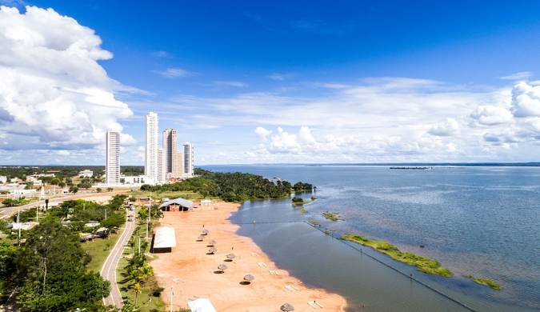

Tocantins é um estado localizado no centro do Brasil, conhecido por sua diversidade natural e cultural. Fundado em 1989, é o mais recente do país. Sua capital, Palmas, é uma cidade planejada e um importante polo de desenvolvimento regional. O estado é atravessado por rios como o Tocantins, que dá nome à região, e possui vastas áreas de cerrado e biomas ricos em fauna e flora. A economia de Tocantins é baseada na agropecuária, na indústria e no turismo, com destaque para suas belezas naturais, como o Jalapão, famoso pelas dunas e chapadões. O estado se destaca pela hospitalidade e pela rica tradição das festas populares e manifestações culturais.
 Voltar